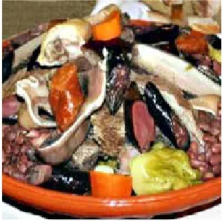

Kapitel 5 · Wein und Speisen kombinieren
Cozido à Portuguesa

Das perfekte Essen für kalte Tage: ein Eintopf aus Rinderhaxe, Rippen, Schweinerippen, Schweineohren, Huhn, Blutwurst, Räucherwürsten oder Farinheiras, roten Bohnen, Birnen, Kohl und Kartoffeln.
Wein: Ausgewogene junge Rotweine aus Trincadeira, Syrah oder Touriga Nacional, ohne künstlichen Holzeinfluss vergoren, passen sehr gut zum Gemüse und zum mageren, zarten Fleisch, zusammen mit dem fetteren Fleisch und den Würsten dieses berühmten Gerichts der portugiesischen Kochtradition. Mitunter passen sogar ein roter Vinho Verde oder ein kräftiger, ausdrucksstarker Weißwein wie Arinto oder Rabigato aus einer Höhenlage oder Sorten mit feinen, neuartigen Noten wie Códega do Larinho oder Viosinho.
Erklärung: Der Cozido à Portuguesa gilt als nationales Kulturerbe und gehört zu den beliebtesten Gerichten des Landes; es gibt zahlreiche regionale Varianten. Die einzelnen Varianten hängen jedoch vom Zufall der tatsächlich verwendeten Zutaten ab, und das beeinflusst Geschmack und Geruch. Salzige oder umamireiche, fleischige Bestandteile können andere Weine verlangen als die meist vorherrschenden Gemüsezutaten. Auch äußere Umstände können die Weinwahl beeinflussen.